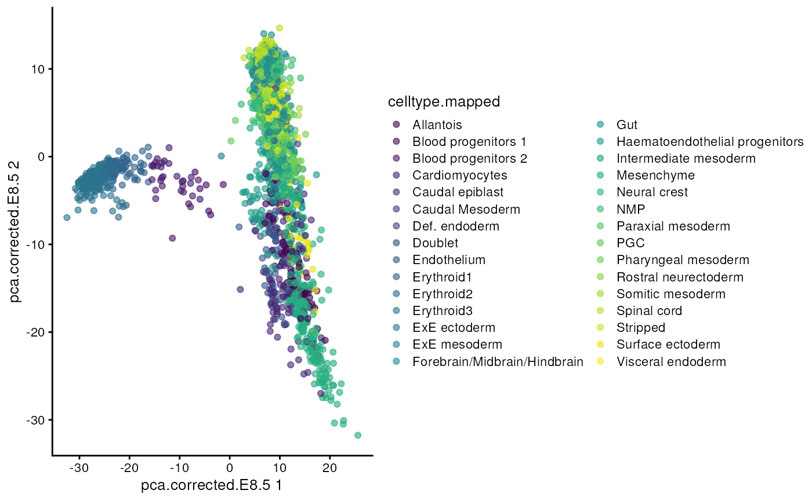

Introduction to Bioconductor and the SingleCellExperiment class
Source:vignettes/intro_bioc_sce.Rmd
intro_bioc_sce.RmdSetup
library(SingleCellExperiment)
library(MouseGastrulationData)The SingleCellExperiment class
One of the main strengths of the Bioconductor project lies in the use of a common data infrastructure that powers interoperability across packages.
Users should be able to analyze their data using functions from
different Bioconductor packages without the need to convert between
formats. To this end, the SingleCellExperiment class (from
the SingleCellExperiment package) serves as the common currency
for data exchange across 70+ single-cell-related Bioconductor
packages.
This class implements a data structure that stores all aspects of our single-cell data - gene-by-cell expression data, per-cell metadata and per-gene annotation - and manipulate them in a synchronized manner.

Let’s start with an example dataset.
sce <- WTChimeraData(sample=5)
sce## class: SingleCellExperiment
## dim: 29453 2411
## metadata(0):
## assays(1): counts
## rownames(29453): ENSMUSG00000051951 ENSMUSG00000089699 ...
## ENSMUSG00000095742 tomato-td
## rowData names(2): ENSEMBL SYMBOL
## colnames(2411): cell_9769 cell_9770 ... cell_12178 cell_12179
## colData names(11): cell barcode ... doub.density sizeFactor
## reducedDimNames(2): pca.corrected.E7.5 pca.corrected.E8.5
## mainExpName: NULL
## altExpNames(0):We can think of this (and other) class as a container, that contains several different pieces of data in so-called slots.
The getter methods are used to extract information from the slots and the setter methods are used to add information into the slots. These are the only ways to interact with the objects (rather than directly accessing the slots).
Depending on the object, slots can contain different types of data (e.g., numeric matrices, lists, etc.). We will here review the main slots of the SingleCellExperiment class as well as their getter/setter methods.
The assays
This is arguably the most fundamental part of the object that
contains the count matrix, and potentially other matrices with
transformed data. We can access the list of matrices with the
assays function and individual matrices with the
assay function. If one of these matrices is called
“counts”, we can use the special counts getter (and the
analogous logcounts).
## [1] TRUE
counts(sce)[1:3, 1:3]## 3 x 3 sparse Matrix of class "dgTMatrix"
## cell_9769 cell_9770 cell_9771
## ENSMUSG00000051951 . . .
## ENSMUSG00000089699 . . .
## ENSMUSG00000102343 . . .You will notice that in this case we have a sparse matrix of class “dgTMatrix” inside the object. More generally, any “matrix-like” object can be used, e.g., dense matrices or HDF5-backed matrices (see “Working with large data”).
The colData and rowData
Conceptually, these are two data frames that annotate the columns and the rows of your assay, respectively.
One can interact with them as usual, e.g., by extracting columns or adding additional variables as columns.
colData(sce)## DataFrame with 2411 rows and 11 columns
## cell barcode sample stage tomato
## <character> <character> <integer> <character> <logical>
## cell_9769 cell_9769 AAACCTGAGACTGTAA 5 E8.5 TRUE
## cell_9770 cell_9770 AAACCTGAGATGCCTT 5 E8.5 TRUE
## cell_9771 cell_9771 AAACCTGAGCAGCCTC 5 E8.5 TRUE
## cell_9772 cell_9772 AAACCTGCATACTCTT 5 E8.5 TRUE
## cell_9773 cell_9773 AAACGGGTCAACACCA 5 E8.5 TRUE
## ... ... ... ... ... ...
## cell_12175 cell_12175 TTTGGTTAGTCCGTAT 5 E8.5 TRUE
## cell_12176 cell_12176 TTTGGTTAGTGTTGAA 5 E8.5 TRUE
## cell_12177 cell_12177 TTTGGTTGTTAAAGAC 5 E8.5 TRUE
## cell_12178 cell_12178 TTTGGTTTCAGTCAGT 5 E8.5 TRUE
## cell_12179 cell_12179 TTTGGTTTCGCCATAA 5 E8.5 TRUE
## pool stage.mapped celltype.mapped closest.cell
## <integer> <character> <character> <character>
## cell_9769 3 E8.25 Mesenchyme cell_24159
## cell_9770 3 E8.5 Endothelium cell_96660
## cell_9771 3 E8.5 Allantois cell_134982
## cell_9772 3 E8.5 Erythroid3 cell_133892
## cell_9773 3 E8.25 Erythroid1 cell_76296
## ... ... ... ... ...
## cell_12175 3 E8.5 Erythroid3 cell_138060
## cell_12176 3 E8.5 Forebrain/Midbrain/H.. cell_72709
## cell_12177 3 E8.25 Surface ectoderm cell_100275
## cell_12178 3 E8.25 Erythroid2 cell_70906
## cell_12179 3 E8.5 Spinal cord cell_102334
## doub.density sizeFactor
## <numeric> <numeric>
## cell_9769 0.02985045 1.41243
## cell_9770 0.00172753 1.22757
## cell_9771 0.01338013 1.15439
## cell_9772 0.00218402 1.28676
## cell_9773 0.00211723 1.78719
## ... ... ...
## cell_12175 0.00129403 1.219506
## cell_12176 0.01833074 1.095753
## cell_12177 0.03104037 0.910728
## cell_12178 0.00169483 2.061701
## cell_12179 0.03767894 1.798687
rowData(sce)## DataFrame with 29453 rows and 2 columns
## ENSEMBL SYMBOL
## <character> <character>
## ENSMUSG00000051951 ENSMUSG00000051951 Xkr4
## ENSMUSG00000089699 ENSMUSG00000089699 Gm1992
## ENSMUSG00000102343 ENSMUSG00000102343 Gm37381
## ENSMUSG00000025900 ENSMUSG00000025900 Rp1
## ENSMUSG00000025902 ENSMUSG00000025902 Sox17
## ... ... ...
## ENSMUSG00000095041 ENSMUSG00000095041 AC149090.1
## ENSMUSG00000063897 ENSMUSG00000063897 DHRSX
## ENSMUSG00000096730 ENSMUSG00000096730 Vmn2r122
## ENSMUSG00000095742 ENSMUSG00000095742 CAAA01147332.1
## tomato-td tomato-td tomato-tdNote the $ short cut.
## [1] TRUE## DataFrame with 2411 rows and 12 columns
## cell barcode sample stage tomato
## <character> <character> <integer> <character> <logical>
## cell_9769 cell_9769 AAACCTGAGACTGTAA 5 E8.5 TRUE
## cell_9770 cell_9770 AAACCTGAGATGCCTT 5 E8.5 TRUE
## cell_9771 cell_9771 AAACCTGAGCAGCCTC 5 E8.5 TRUE
## cell_9772 cell_9772 AAACCTGCATACTCTT 5 E8.5 TRUE
## cell_9773 cell_9773 AAACGGGTCAACACCA 5 E8.5 TRUE
## ... ... ... ... ... ...
## cell_12175 cell_12175 TTTGGTTAGTCCGTAT 5 E8.5 TRUE
## cell_12176 cell_12176 TTTGGTTAGTGTTGAA 5 E8.5 TRUE
## cell_12177 cell_12177 TTTGGTTGTTAAAGAC 5 E8.5 TRUE
## cell_12178 cell_12178 TTTGGTTTCAGTCAGT 5 E8.5 TRUE
## cell_12179 cell_12179 TTTGGTTTCGCCATAA 5 E8.5 TRUE
## pool stage.mapped celltype.mapped closest.cell
## <integer> <character> <character> <character>
## cell_9769 3 E8.25 Mesenchyme cell_24159
## cell_9770 3 E8.5 Endothelium cell_96660
## cell_9771 3 E8.5 Allantois cell_134982
## cell_9772 3 E8.5 Erythroid3 cell_133892
## cell_9773 3 E8.25 Erythroid1 cell_76296
## ... ... ... ... ...
## cell_12175 3 E8.5 Erythroid3 cell_138060
## cell_12176 3 E8.5 Forebrain/Midbrain/H.. cell_72709
## cell_12177 3 E8.25 Surface ectoderm cell_100275
## cell_12178 3 E8.25 Erythroid2 cell_70906
## cell_12179 3 E8.5 Spinal cord cell_102334
## doub.density sizeFactor my_sum
## <numeric> <numeric> <numeric>
## cell_9769 0.02985045 1.41243 27577
## cell_9770 0.00172753 1.22757 29309
## cell_9771 0.01338013 1.15439 28795
## cell_9772 0.00218402 1.28676 34794
## cell_9773 0.00211723 1.78719 38300
## ... ... ... ...
## cell_12175 0.00129403 1.219506 26680
## cell_12176 0.01833074 1.095753 19013
## cell_12177 0.03104037 0.910728 24627
## cell_12178 0.00169483 2.061701 46162
## cell_12179 0.03767894 1.798687 38398The reducedDims
Everything that we have described so far (except for the
counts getter) is part of the
SummarizedExperiment class that SingleCellExperiment
extends.
One of the peculiarity of SingleCellExperiment is its ability to store reduced dimension matrices within the object. These may include PCA, t-SNE, UMAP, etc.
reducedDims(sce)## List of length 2
## names(2): pca.corrected.E7.5 pca.corrected.E8.5As for the other slots, we have the usual setter/getter, but it is somewhat rare to interact directly with these functions.
It is more common for other functions to store this
information in the object, e.g., the runPCA function from
the scater package.
Here, we use scater’s plotReducedDim
function as an example of how to extract this information
indirectly from the objects. Note that one could obtain the
same results (somewhat less efficiently) by extracting the corresponding
reducedDim matrix and ggplot.
## Loading required package: scuttle## Loading required package: ggplot2
plotReducedDim(sce, "pca.corrected.E8.5", colour_by = "celltype.mapped")## Warning: Removed 131 rows containing missing values (`geom_point()`).
Session Info
## R version 4.3.0 (2023-04-21)
## Platform: x86_64-pc-linux-gnu (64-bit)
## Running under: Ubuntu 22.04.2 LTS
##
## Matrix products: default
## BLAS: /usr/lib/x86_64-linux-gnu/openblas-pthread/libblas.so.3
## LAPACK: /usr/lib/x86_64-linux-gnu/openblas-pthread/libopenblasp-r0.3.20.so; LAPACK version 3.10.0
##
## locale:
## [1] LC_CTYPE=en_US.UTF-8 LC_NUMERIC=C
## [3] LC_TIME=en_US.UTF-8 LC_COLLATE=en_US.UTF-8
## [5] LC_MONETARY=en_US.UTF-8 LC_MESSAGES=en_US.UTF-8
## [7] LC_PAPER=en_US.UTF-8 LC_NAME=C
## [9] LC_ADDRESS=C LC_TELEPHONE=C
## [11] LC_MEASUREMENT=en_US.UTF-8 LC_IDENTIFICATION=C
##
## time zone: Etc/UTC
## tzcode source: system (glibc)
##
## attached base packages:
## [1] stats4 stats graphics grDevices utils datasets methods
## [8] base
##
## other attached packages:
## [1] scater_1.28.0 ggplot2_3.4.2
## [3] scuttle_1.10.1 MouseGastrulationData_1.14.0
## [5] SpatialExperiment_1.10.0 SingleCellExperiment_1.22.0
## [7] SummarizedExperiment_1.30.2 Biobase_2.60.0
## [9] GenomicRanges_1.52.0 GenomeInfoDb_1.36.1
## [11] IRanges_2.34.1 S4Vectors_0.38.1
## [13] BiocGenerics_0.46.0 MatrixGenerics_1.12.2
## [15] matrixStats_1.0.0
##
## loaded via a namespace (and not attached):
## [1] jsonlite_1.8.7 magrittr_2.0.3
## [3] ggbeeswarm_0.7.2 magick_2.7.4
## [5] farver_2.1.1 rmarkdown_2.23
## [7] fs_1.6.2 zlibbioc_1.46.0
## [9] ragg_1.2.5 vctrs_0.6.3
## [11] memoise_2.0.1 DelayedMatrixStats_1.22.1
## [13] RCurl_1.98-1.12 htmltools_0.5.5
## [15] S4Arrays_1.0.4 AnnotationHub_3.8.0
## [17] curl_5.0.1 BiocNeighbors_1.18.0
## [19] Rhdf5lib_1.22.0 rhdf5_2.44.0
## [21] sass_0.4.6 bslib_0.5.0
## [23] desc_1.4.2 cachem_1.0.8
## [25] mime_0.12 lifecycle_1.0.3
## [27] pkgconfig_2.0.3 rsvd_1.0.5
## [29] Matrix_1.5-4.1 R6_2.5.1
## [31] fastmap_1.1.1 GenomeInfoDbData_1.2.10
## [33] shiny_1.7.4 digest_0.6.32
## [35] colorspace_2.1-0 AnnotationDbi_1.62.2
## [37] rprojroot_2.0.3 dqrng_0.3.0
## [39] irlba_2.3.5.1 ExperimentHub_2.8.0
## [41] textshaping_0.3.6 RSQLite_2.3.1
## [43] beachmat_2.16.0 labeling_0.4.2
## [45] filelock_1.0.2 fansi_1.0.4
## [47] httr_1.4.6 compiler_4.3.0
## [49] bit64_4.0.5 withr_2.5.0
## [51] BiocParallel_1.34.2 viridis_0.6.3
## [53] DBI_1.1.3 highr_0.10
## [55] HDF5Array_1.28.1 R.utils_2.12.2
## [57] rappdirs_0.3.3 DelayedArray_0.26.6
## [59] rjson_0.2.21 tools_4.3.0
## [61] vipor_0.4.5 beeswarm_0.4.0
## [63] interactiveDisplayBase_1.38.0 httpuv_1.6.11
## [65] R.oo_1.25.0 glue_1.6.2
## [67] rhdf5filters_1.12.1 promises_1.2.0.1
## [69] grid_4.3.0 generics_0.1.3
## [71] gtable_0.3.3 R.methodsS3_1.8.2
## [73] BiocSingular_1.16.0 ScaledMatrix_1.8.1
## [75] utf8_1.2.3 XVector_0.40.0
## [77] ggrepel_0.9.3 BiocVersion_3.17.1
## [79] pillar_1.9.0 stringr_1.5.0
## [81] limma_3.56.2 BumpyMatrix_1.8.0
## [83] later_1.3.1 dplyr_1.1.2
## [85] BiocFileCache_2.8.0 lattice_0.21-8
## [87] bit_4.0.5 tidyselect_1.2.0
## [89] locfit_1.5-9.8 Biostrings_2.68.1
## [91] knitr_1.43 gridExtra_2.3
## [93] edgeR_3.42.4 xfun_0.39
## [95] DropletUtils_1.20.0 stringi_1.7.12
## [97] yaml_2.3.7 evaluate_0.21
## [99] codetools_0.2-19 tibble_3.2.1
## [101] BiocManager_1.30.21 cli_3.6.1
## [103] xtable_1.8-4 systemfonts_1.0.4
## [105] munsell_0.5.0 jquerylib_0.1.4
## [107] Rcpp_1.0.10 dbplyr_2.3.2
## [109] png_0.1-8 parallel_4.3.0
## [111] ellipsis_0.3.2 pkgdown_2.0.7
## [113] blob_1.2.4 sparseMatrixStats_1.12.2
## [115] bitops_1.0-7 viridisLite_0.4.2
## [117] scales_1.2.1 purrr_1.0.1
## [119] crayon_1.5.2 rlang_1.1.1
## [121] cowplot_1.1.1 KEGGREST_1.40.0Further Reading
- OSCA book, Introduction
Exercises
- Create a
SingleCellExperimentobject: Try and create a SingleCellExperiment object “from scratch”. Start from a matrix (either randomly generated or with some fake data in it) and add one or more columns as colData.
Hint: the SingleCellExperiment function can be used to
create a new SingleCellExperiment object.
- Combining two objects: The
MouseGastrulationDatapackage contains several datasets. Download sample 6 of the chimera experiment by runningsce6 <- WTChimeraData(sample=6). Use thecbindfunction to combine the new data with thesceobject created before.